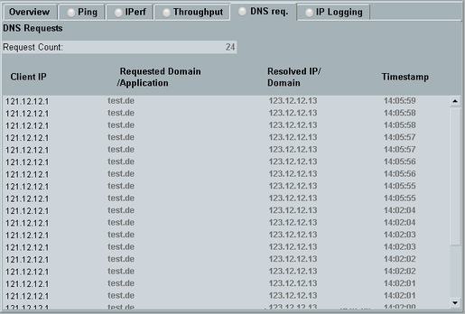
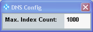

The "DNS Requests" measurement monitors all DNS queries addressed to the internal DNS server of the DAU.

The "Request Count" indicates the number of recorded DNS queries.
- "Client IP"
IP address of the client (DUT) that has sent the DNS request - "Requested Domain / Application"
Information to be resolved by the DNS query. A type A or type AAAA DNS query indicates a domain, while a type SRV DNS query indicates an application name. - "Resolved IP / Domain"
Information returned for the DNS query. A successful type A or type AAAA DNS query returns the IP address of the requested domain. A successful type SRV DNS query returns a domain supporting the requested application. - "Timestamp"
Time when the query was received
Press the "Config" hotkey to access the measurement settings.

"Max. Index Count" specifies the maximum length of the result list (number of requests). The result list is stored in a ring buffer. When it is full, the first result line is deleted whenever a new result line is added to the end.
Remote command:Turn the measurement on or off using the [ON | OFF] or [RESTART | STOP] keys. Alternatively, right-click the "DNS Requests" softkey.
The softkey shows the current measurement state. Additional measurement substates can be retrieved via remote control.
Remote command: